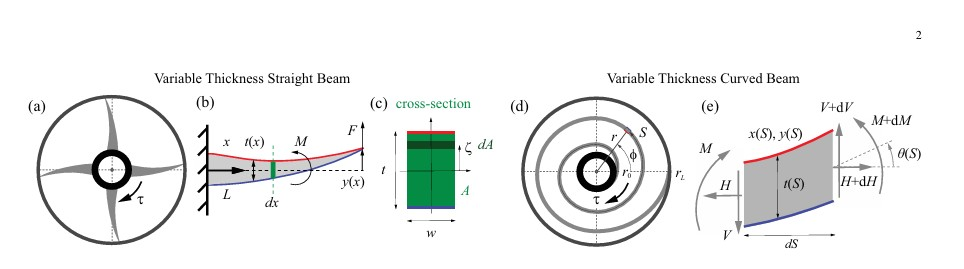
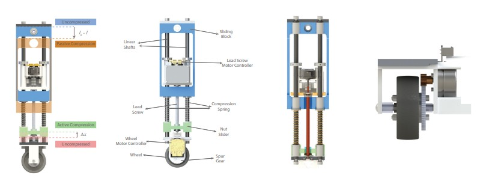
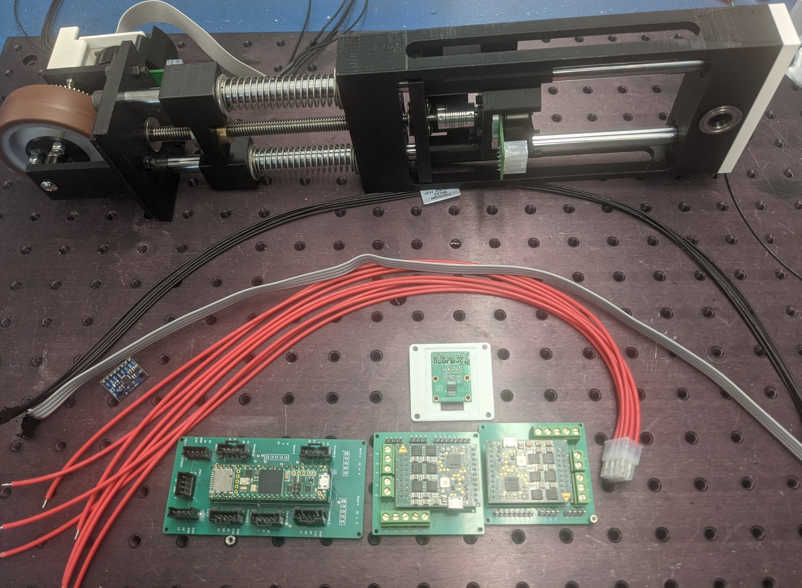
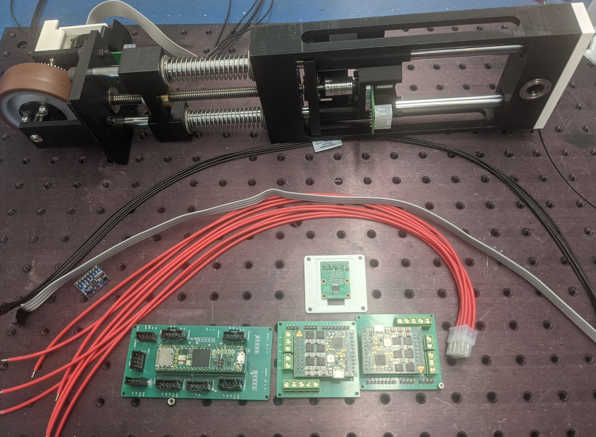
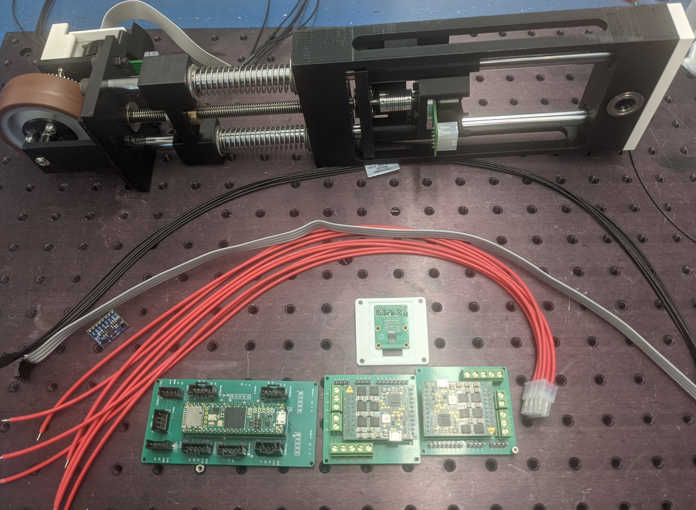

Conference Paper — embedded C++ code, simulation codes, and paper figures can be found here
Ali Umut Kilic
PhD Candidate — Mechanical Engineering
Hello — I’m Ali
I’m a PhD candidate in Mechanical Engineering at Vanderbilt University researching dynamics of legged locomotion, optimal elastic actuator design, and fall prevention. I build control systems, embedded hardware, and simulation tools related to these subjects!
Publications & manuscripts
Conference paper — animation video, simulation codes, and paper figures can be found here
Journal Paper — under review (RAL)
Journal Paper — under review (RAL) - Designed and manufactured the highest mass-energy density torsional springs in the literature



Professional projects
Second place award
Experiments co-designed, conducted, and graded by me. Simulations, raw and processed experimental data are available here
Publication in preparation. Sample photos of the concept along with the PCB and mechanical designs shown below. Embedded control code is available here

 


Personal projects
Chess tournament pairing handler designed by me for a local bar tournament. C++ code can be found here
Implementation of simple functions: moving average, first order and second order filters, and signal blending. Code and example tests can be found here